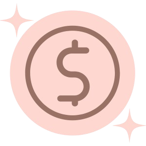
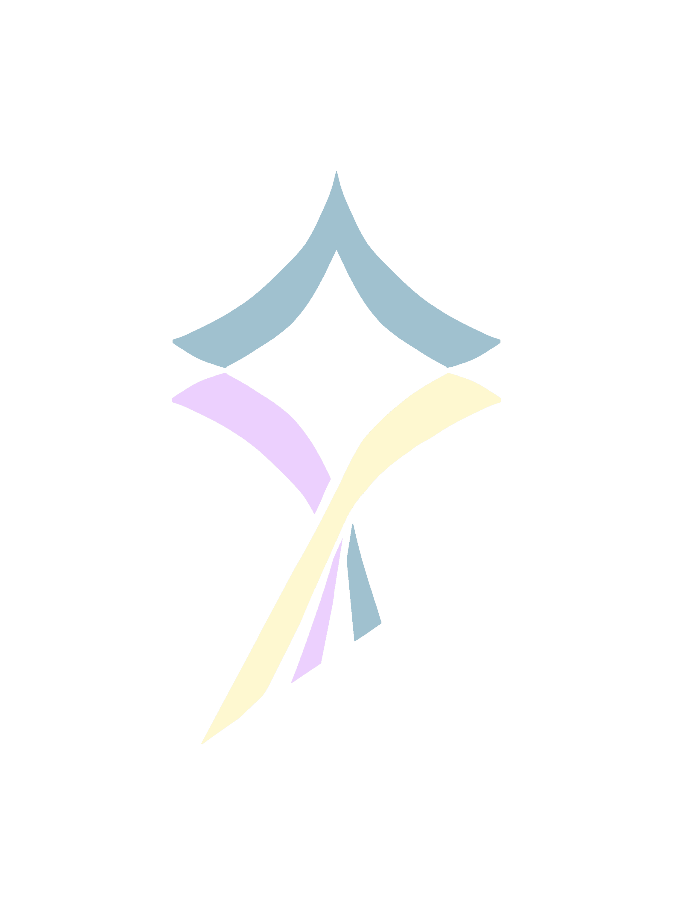
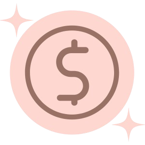
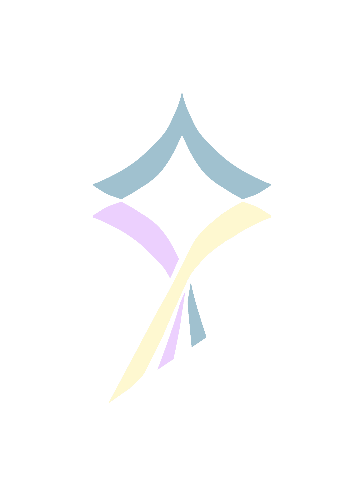
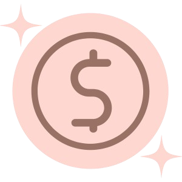
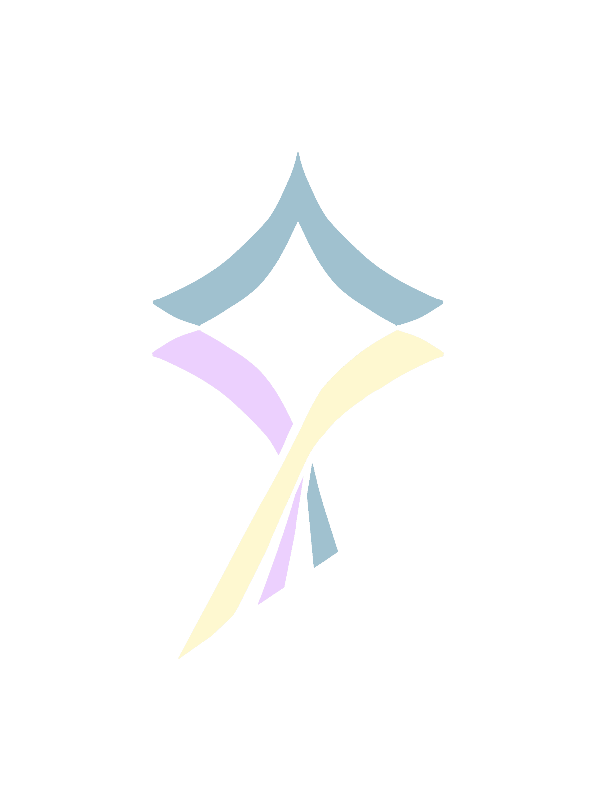
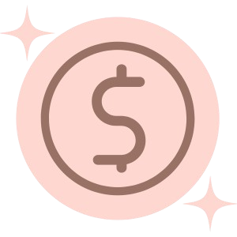
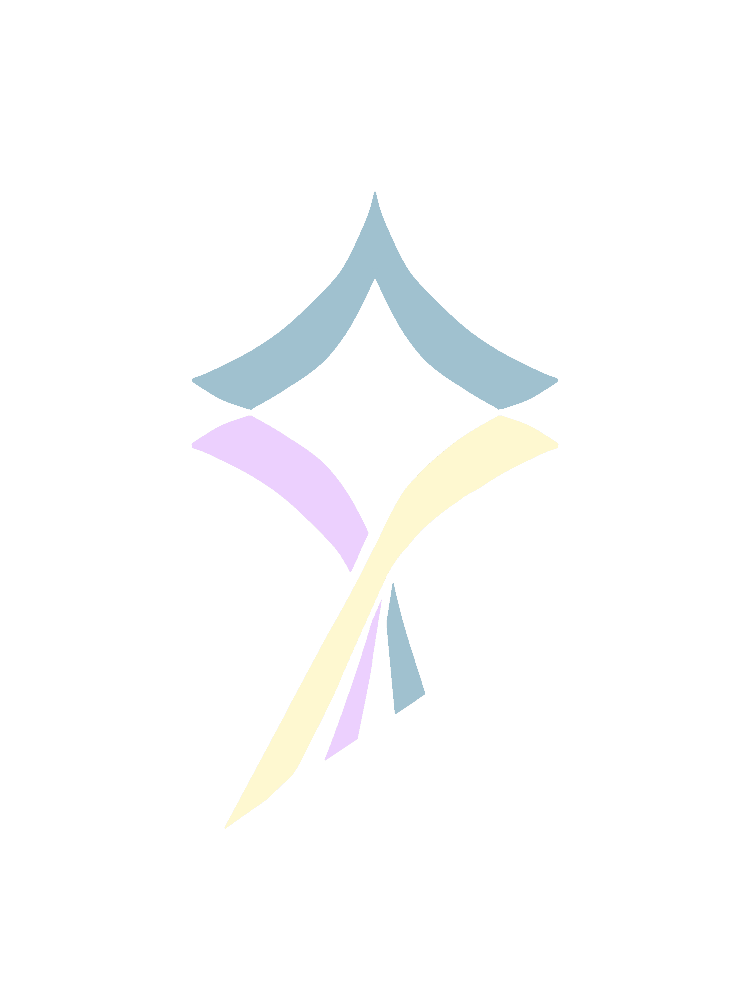

So, how does this all work? That might be your question. Fortunately, we have some great answers for you!
Serenaid is meant to act as motivation towards building better sleep hygiene (AKA sleep health.) Students are largely susceptible to poor sleep duration and quality. Of course, we respect that extra-curriculars, assignments, and jobs absorb most of your time. However, sleep is essential in ensuring that you perform well in these sections of your life! (Which you so dearly care about.) We give you an incentive to consistently sleep well while providing digestible tips, tricks, and resources. Every accomplishment, even the small ones, are deserving of a reward. That’s why we have our gift-card/prize draws.
Okay great. You’ve improved your sleep, but now what?
As we’ve mentioned, you can enter a draw to win a prize! At the cost of 350 coins, of course. You can gain these points through regularly logging your sleep schedule, levelling up, and using app features.
Go to the challenge page to submit your sleep quality and hours in the “Today’s Sleep Challenge” section. The higher the sleep quality, and the more ideal your sleep duration is, the more coins you will gain. (So no, adding ”17 hours of sleep” will not help you. It’s a wonder if you slept that long though, really.) Coins that are gained can be used to enter the current promotion or draw.
Purple milestones will pop-up on the middle section of your challenge page. The number on the bottom right corner indicates how many days you have completed out of a week streak. Completing a full week of logging, symbolized by a yellow milestone, will result in a level up. You can gain coins from this level up too.
Serenaid already provides generalized advice, and while we are NOT medical professionals, we can help you narrow down specific issues with your sleep. Taking a self-screening test allows for personal reflection on your sleep habits. Taking this test will supply you with a minimal amount of coins as well.
Cool-down, study, or meditate…The soundscape is waiting for you! For every 10 minute interval spent here, you will gain coins. Volumes and active audios are adjustable.
Test your luck and pick a number from 1-30 for a few coins. Just for fun!
See that progress bar at the bottom of the challenge page? Complete your daily tasks and gain bonus coins once the bar is full!
After accumulating 350 coins you can enter a draw! Upon pressing the ‘enter draw’ button, you will receive a pop up with information based on a loss or win. If you do win, you will receive more information on the prize! But remember, first come, first serve.
Further instructions depend on the promotion.
Your levels (weeks completed), current streak, coins, and information can be viewed on the stats section of the app.
One app can't solve every problem. AND, there are many aspects of life that affect sleep: school, work, family, and so on. So as advocates for healthy rest---and a healthy life in general---we have linked organizations, helplines, and even more tips in the resource section.
Don't be afraid to ask questions or to look for better ways to support yourself.